N 扩展规范草案
目前此扩展的讨论基于 M/S/U 的三特权设计
用户态中断与异常的处理流程

中断的产生
与 M 态和 S 态类似，中断分为软件中断 (Software Interrupt)、时钟中断 (Timer Interrupt) 和外部中断 (External Interrupt)。
方便起见，三类中断会简称为 xSI、xTI、xEI，其中 x 为特权级。
硬件或软件将 uip.UXIP (X 表示中断种类) 置为 1 ，硬件检测发现 uip 非零，进入中断的判断流程。
首先检查该中断是否被委托给用户态处理，即 sideleg 寄存器中对应的位是否为 1；如果为真，检查用户态全局中断使能是否为真，即 ustatus.UIE 是否为 1 ；若仍为真，再检查该中断是否被使能，即 uie.UXIE 是否为 1 ；如果还为真，则触发中断处理的流程。
注意
上述寄存器中，
uieuip为miemip的子集，即读写会同时作用于所有的xipxie或它们本就是同一寄存器。而ustatus至少UIE和UPIE与mstatus中的相同位相同。虽然上述中断产生的流程中有判断次序，实际实现中一般使用组合逻辑，将寄存器值进行位与来判断，可以认为是同时判断的。
异常的产生
当异常发生时，硬件只检查 sedeleg 寄存器中对应的位是否为 1，若为真则触发异常的处理流程。
在 RISC-V 中，中断和异常的处理流程是统一的，下面出于描述简单考虑，多数情况下围绕中断进行描述。
中断的处理
在上述的产生流程后，处理器开始进行一些预处理：
- 设置
ustatus.UPIE为ustatus.UIE的值，并置ustatus.UIE为 0 - 根据中断类型设置
ucause - 设置
uepc为发生中断或异常时的pc - (可选) 设置
utval - 根据
utvec的最低二位和高位的基地址，跳转到设置好的中断处理程序
中断处理程序需要完成以下工作：
- 保存现场
- 如果
utvec为 direct 模式，根据ucause执行相应的处理程序 - 如果
utvec为 vector 模式，执行处理程序 - 恢复现场
中断处理程序通常需要保存和恢复的现场有：
- x1-x31 通用寄存器 (如果确定中断处理程序中不会使用到某些寄存器，可以省去保存和恢复)
ustatus(可能需要通过修改ustatus来改变 CPU 状态)uepc(可能需要通过修改进一步触发 S 态的中断/异常)- 我们尚未注意到的但需要保存和恢复的寄存器

N 扩展的 CSR
用户状态寄存器 (ustatus)
UXLEN-1 5 4 3 1 0
┌────────┬──────┬──────┬─────┐
│ WPRI │ UPIE │ WPRI │ UIE │
└────────┴──────┴──────┴─────┘
UXLEN-5 1 3 1
ustatus 是一个 UXLEN 位长的可读写寄存器，记录和控制硬件线程当前的工作状态。
用户态中断使能位 UIE 为零时，用户态中断被禁用。为了向用户态陷入处理程序提供原子性，UIE 中的值在用户态中断发生时被复制到 UPIE ，且 UIE 被置为零。
UIE 和 UPIE 是 mstatus 和 sstatus 中对应位的镜像。
进入用户态中断处理函数之前的特权级只可能是用户态，所以不需要 UPP 位。
指令 URET 用于从用户态陷入状态中返回。URET 将 UPIE 复制回 UIE，然后将 UPIE 置位，最后将 uepc 拷贝至 pc。
在 UPIE/UIE 栈弹出后置位 UPIE 是为了启用中断，以及帮助发现代码中的错误。
用户陷入向量基址寄存器 (utvec)
| BASE[UXLEN-1 : 2] | MODE |
utvec 是 UXLEN 位长的可读写寄存器，存储陷入向量的设置，包括向量基址 (BASE) 和向量模式。
utvec 中的 BASE 为 WARL 字段，可以存储任何有效的虚拟地址或物理地址，地址需要对齐到 4 字节。其他的向量模式可能有额外的对齐约束条件。
| value | name | description |
|---|---|---|
| 0 | direct | base |
| 1 | vectored | base + 4 * cause |
| reserved |
用户中断寄存器 (uip 与 uie)
uip 和 uie 均为 UXLEN 位的可读写寄存器，其中 uip 存储等待处理的中断信息， uie 存储相应的中断使能位。
UXLEN-1 9 8 7 5 4 3 1 0
| WPRI | UEIP | WPRI | UTIP | WPRI | USIP |
| WPRI | UEIE | WPRI | UTIE | WPRI | USIE |
UXLEN-9 1 3 1 3 1
定义三种中断：软件中断、时钟中断和外部中断。用户态软件中断通过置位当前硬件线程的 uip 的软件中断等待位 (USIP) 来触发。清零该位可以清除待处理的软件中断。当 uie 中的 USIE 为零时，用户态软件中断被禁用。
ABI 应当提供一种向其他硬件线程发送跨核中断的机制，这最终将置位接收方硬件线程 uip 寄存器的 USIP 位。
除了 USIP， uip 中的其他位在用户态是只读的。
如果 uip 寄存器中的 UTIP 位被置位，将产生一个待处理的用户态时钟中断。当 uie 寄存器中的 UTIE 位被置零时，用户态时钟中断被禁用。ABI 应该提供清除待处理的时钟中断的机制。
如果 uip 寄存器中的 UEIP 位被置位，将产生一个待处理的用户态外部中断。当 uie 寄存器中的 UEIE 位被置位时，用户态外部中断被禁用。ABI 应该提供屏蔽、解除屏蔽和查询外部中断原因的机制。
uip 和 uie 寄存器是 mip 和 mie 寄存器的子集。对 uip/uie 任何字段的读取或写入操作，都会等效为对 mip/mie 的相应字段的读取或写入。如果系统实现了 S 模式，uip 和 uie 寄存器也是 sip 和 sie 寄存器的子集。
内核态陷入委托寄存器 (sedeleg 与 sideleg)
为提升中断和异常的处理性能，可以实现独立的可读写寄存器 sedeleg 和 sideleg，设置其中的位将特定的中断和异常交由用户态陷入处理程序处理。这两个寄存器与相应的机器态陷入委托寄存器 (medeleg 和 mideleg) 布局相同。只有已经被委托给 S 态的陷入对应的位才是可写的，其余位由硬件保持为 0 ，即只有委托给 S 态的陷入才可能被委托给 U 态。
当一个陷入被委托给一个权限较低的模式 u 时，ucause 寄存器被写入陷阱的原因；uepc 寄存器被写入发生陷阱的指令的虚拟地址；utval 寄存器被写入一个特定的异常数据；mstatus 的 UPIE 字段被写入陷阱发生时 UIE 字段的值；mstatus 的 UIE 字段被清零。mcause/scause 和 mepc/sepc 寄存器以及 mstatus 的 MPP 和 MPIE 字段不被写入。
一个实现不应硬性规定任何委托位为一，也就是说，任何可以被委托的陷阱都必须支持不被委托。一个实现方案是选择可委托的陷入的子集。支持的可委托位可通过向每个比特位置写 1，然后读回 medeleg/sedeleg 或 mideleg/sideleg 中的值，看看哪些位上有 1。
目前，不支持触发低权限级的陷入
不会在用户态发生的应硬件恒零，如 ECall from S/H/M-mode
uscratch
uscratch 寄存器是一个 UXLEN 位读/写寄存器。
用户异常程序计数器 (uepc)
uepc 是 UXLEN 位的可读写寄存器。最低位（uepc[0]）恒为零。次低位 uepc[1] 视实现的对齐需求而定。
uepc 是 WARL 寄存器，必须能存储所有有效的虚拟地址，但不需要能够存储所有可能的无效地址。实现可以先将一些非法地址转为其他非法地址再写入 uepc。
当陷入在用户态处理时，被中断或触发异常的指令的虚拟地址被写入 uepc，除此之外 uepc 永远不会被硬件实现写入，但可能被软件显式写入。
用户陷入原因寄存器 (ucause)
| Interrupt | Exception Code (WLRL) |
ucause 是 UXLEN 位长读写寄存器。当陷入在用户态处理时，触发陷入的事件编号被写入 ucause，除此之外 ucause 永远不会被硬件实现写入，但可能被软件显式写入。
| Interrupt | Exception Code | Description |
|---|---|---|
| 1 | 0 | 用户态软件中断 |
| 1 | 1-3 | 预留 |
| 1 | 4 | 用户态时钟中断 |
| 1 | 5-7 | 预留 |
| 1 | 8 | 用户态外部中断 |
| 1 | 9-15 | 预留 |
| 1 | ≥16 | 由平台使用 |
| 0 | 0 | 指令地址未对齐 |
| 0 | 1 | 指令访问错误 |
| 0 | 2 | 非法指令 |
| 0 | 3 | 断点 |
| 0 | 4 | 加载地址未对齐 |
| 0 | 5 | 加载访问错误 |
| 0 | 6 | 存储/原子内存操作地址未对齐 |
| 0 | 7 | 存储/原子内存操作访问错误 |
| 0 | 8 | 用户态环境调用 |
| 0 | 9-11 | 预留 |
| 0 | 12 | 指令页错误 |
| 0 | 13 | 加载页错误 |
| 0 | 14 | 预留 |
| 0 | 15 | 存储/原子内存操作页错误 |
| 0 | 16-23 | 预留 |
| 0 | 24-31 | 自定义用途 |
| 0 | 32-47 | 预留 |
| 0 | 48-63 | 自定义用途 |
| 0 | ≥64 | 预留 |
用户陷入值寄存器 (utval)
utval 是 UXLEN 位的可读写寄存器。当陷入在用户态处理时，和特定异常相关的信息将被写入 utval 以帮助软件处理陷入，除此之外 utval 永远不会被硬件实现写入，但可能被软件显式写入。硬件平台指定哪些异常必须将信息写入 utval ，以及哪些异常会无条件写入 0 。
当硬件断点被触发，或是一个指令/加载/存储地址未对齐/访问错误/页错误异常产生时，导致错误的虚拟地址被写入 utval 。当非法指令异常产生时，相应指令的前 XLEN 或 ILEN 位可能被写入 utval 。对于其他异常，utval 被置为 0 ，但未来的标准可能重新定义 utval 的设置。
N 扩展的指令
URET
uret 将 pc 设置为 uepc ，将 ustatus.UIE 设置为 ustatus.UPIE ，从而恢复中断前的状态。